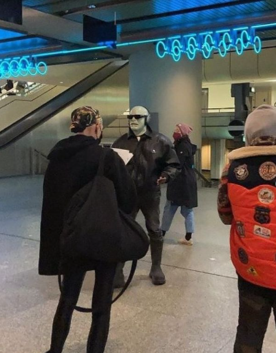
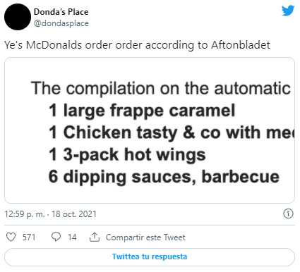
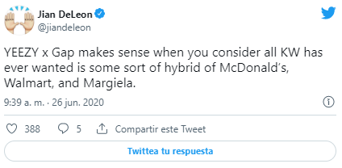
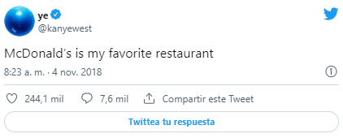

SNEAKERS
7 de noviembre de 2021 | Por Emanuel Navarro
Mientras estaba en Die Hauptstadt, Ye también pasó por McDonald's para probar la mejor cocina que Alemania tiene para ofrecer. Gracias al periódico sueco Aftonbladet, la cuenta de fan @dondasplace se enteró de lo que el propio Mister Poopy-di Scoop se entregó.
Kanye supuestamente ordenó: un Frappé de caramelo grande, un Chicken Tasty (un sándwich exclusivo de Europa), una papas fritas medianas, un batido de chocolate grande, un paquete de tres alitas picantes y seis salsas de barbacoa.
En caso de que no haya marcado eso, requiere dos paquetes de salsa por ala de pollo. La noticia de la excéntrica orden de Ye llega inmediatamente después del equipo Popeyes de Megan Thee Stallion , el último de una secuencia aparentemente interminable de colaboraciones de celebridades de comida rápida.
Tan anticuados como se han vuelto los Big Macs respaldados por raperos, una comida Kanye West de edición limitada sería un éxito innegable. De hecho, podría volver a hacer que la comida rápida sea divertida.
Puedo verlo ahora: la comida se serviría en una bolsa de papel anodina, similar a las sudaderas con capucha YEEZY x GAP de Kanye empaquetadas.
Los cartones negros sin marca contendrían la comida favorita de Ye y sus dos bebidas a base de lácteos llegarían en botellas de agua oscurecidas . Las copiosas cantidades de salsa barbacoa de la comida también serían negras.
Y los empleados de McDonald servirían la colab con uniformes diseñados por Balenciaga 's Demna Gvasalia , no es ajeno a la moda inspirada en la comida rápida .
La asociación es una pareja hecha en el cielo. En 2018, el rapero tuiteó, "McDonald's es mi restaurante favorito" y en 2016 compartió, "McDonalds es mi marca favorita", lo que no es sorprendente, considerando su amor por GAP , otro alimento básico estadounidense.
Incluso escribió un poema sobre McDonald's que incluye una frase increíblemente acertada: "Siempre supe que las patatas fritas eran un hombre malvado / Oler todo bien y mierda".
Dado el antiguo amor de Kanye por los Golden Arches y su base de fanáticos ultra devotos, un co-firmante de McDonald's es una obviedad en términos de comerciabilidad y rentabilidad.
Lamentablemente, no hay señales de que la pareja esté preparando una comida, por lo que podría depender del otro restaurante favorito de Kanye, Chick-Fil-A , tomar el relevo.
2do video
Intro
| 15 de agosto de 2021 |
Concepto : Es la intro actual de el canal de Ema "Cultura General" que estará bigente solo por un año. Hay unos tambores de fondo a los cuales los acompañan una guitarra electrica y ya de último se puede escuchar la voz de Aarón (El mejor amigo de Ema) y lo que dice Aarón en la intro es "QUE TE VALGA VERGA MAJE" lo cual motivo a Ema a crear un canal en YouTube y hacer su primer video.
Porque lo motivo : "Porque lo que Aarón dijo fue basicamente como "QUE NO TE IMPORTE LO QUE DIGAN LOS DEMÁS" o "SIMPLEMTE SOLO HAZLO Y ATREVETE" y me pegaron bien profundo esas palabras porque una de las cosas de las cuales la gente se arrepienten en su vida es no averlo intentado, se quedan con el "¿QUE HUBIERA PASADO SI LO INTENTAVA?, ¿ESTARÍA EN EL LUGAR QUE ESTOY AHORA MISMO?, ¿SERÍA FELIZ SI LO HUBIERA INTENTADO?" no quiero arrepentirme de nada, el día de mi muerte sabré porque viví" Dijo Ema al preguntarle por que lo inspirarón esas palabra tan sabias de Aarón.
Ver más3er video
Juego Salvar a mi hermana
| 15 de agosto de 2021 |
Concepto : Es un tutorial acerca de uno de los juegos más famosos y divertidos de juegos diarios el cual es "salvar a mi hermana".
En el video Ema da una clase de tutorial acerca de los comendos del juego y de como salvar a tu hermana, claro si es que te atreves a jugarlo.
Ver más